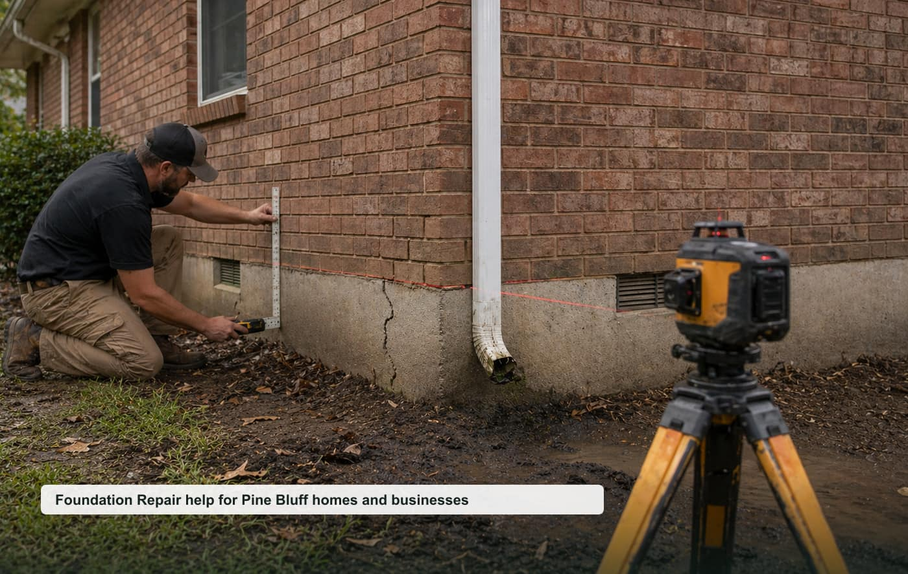

Foundation Repair
Slab movement, cracks, settlement, uneven floors, and structural concerns.
View pagefoundation repair Pine Bluff AR
A focused local quote request website for Pine Bluff, Jefferson County, and nearby communities.

Opportunity thesis
High-ticket structural leads in an older housing market where localized content may compete well against broad regional providers.
The site is built around specific high-intent pages instead of one generic homepage. That makes it easier to test rankings, route leads by job type, and pitch a local business with clear ROI.
Service cluster
Slab movement, cracks, settlement, uneven floors, and structural concerns.
View pageMoisture, supports, sagging floors, vapor barriers, and access issues.
View pagePush piers, helical piers, supports, and settlement correction questions.
View pageSunken porches, walkways, patios, driveways, and slab trip hazards.
View pageGrading, gutter discharge, yard water, and soil movement around homes.
View pageWarning signs, home sale concerns, and repair planning.
View pageBuyer-intent pages
Homeowner-focused foundation repair quote requests for inspections, repairs, replacements, and planned projects in Pine Bluff.
View pageSmall business, property manager, and light commercial foundation repair requests around Pine Bluff and Jefferson County.
View pageUrgent foundation repair requests where response time, safety, access, and callback speed matter.
View pageLocal search page for nearby foundation repair requests in Pine Bluff, Jefferson County, and surrounding communities.
View pageThese pages support nearby searches without claiming fake office locations.
Repeatable model
Start with tracked calls/forms, validate ranking movement, then offer a trial to the best local provider. Keep the lead flow exclusive once paid.
Planning guides
Local questions
Cost depends on project size, urgency, access, materials, labor, and the final scope confirmed by the provider.
Response depends on provider availability, weather, job type, and whether the request is emergency or planned work.
Nearby requests may be routed for White Hall, Redfield, Altheimer and surrounding Jefferson County communities.
Include your city, project type, rough size, visible symptoms, timeline, and the best callback number.
Request a local quote
Include the project type, rough size, city, urgency, and best callback number.
Pine Bluff Foundation Help serves Pine Bluff, Arkansas and nearby communities.